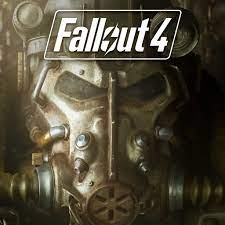
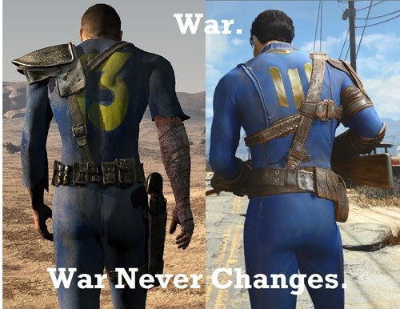
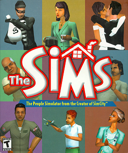
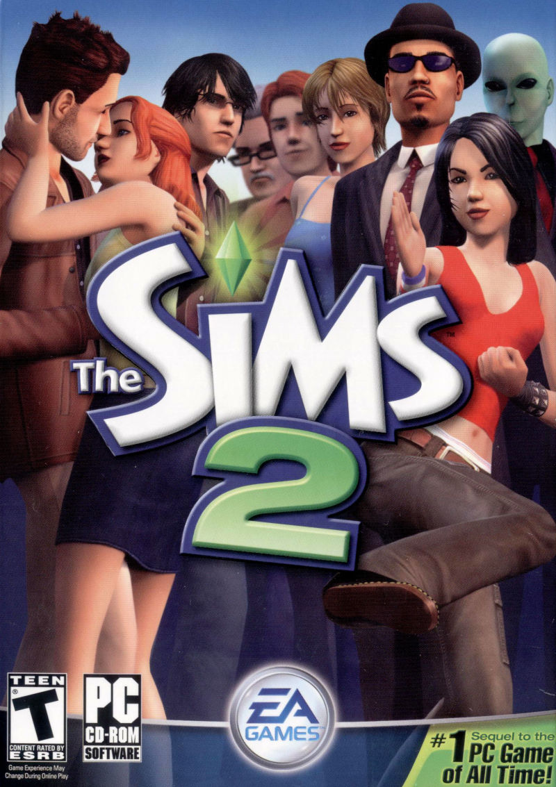
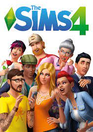
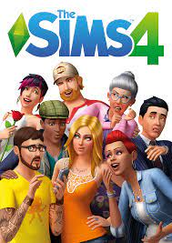

My Favoriate Hobby: Video Games
This is a website that I have created to discuss and share with you some information about one of my favoriate past times,video games.One
of the many reasons that video games are a favoriate past time of mine, is because of the amount/variety of different types or genres of
games that are avaiable to play today. Some of these different genres include: Role Playing Games(RPG),Massive Multiplayer Online(MMO),Simulation,
and First Person Shooters(FPS),These are just a few of the many,many different genres of games that are avaiable to people to play today.
Some of my personal favoriates out of the generes I have listed above are,RPG's,Simulation and FPS.Listed below are some of my personal favoriates
from each of the genres I have already talked about.
- Fallout
- Assassin's Creed
- Far Cry
- Detroit Become Human
- The Sims
Fallout 4:
Fallout 4 is among the strongest games in the entire franchise, and for a good reason. The world is massive and immersive,
the characters feel real and interesting, and your choices have lasting effects on the landscape of the Commonwealth.
It also has one of the most compelling main storylines that sends us on a hot pursuit after our baby son Shaun.
thegamer.com

Assassin's Creed:
The story of Assassin's Creed is vast. The series has had 12 main titles, the timeline spans centuries,
and each game offers a vast world to explore. It gives the player a lot to absorb in terms of gameplay,
story, and themes.
thegamer.com Assassin's Creed Homepage

Sims Series:
The Sims is a strategic life simulation video game developed by Maxis and published by Electronic Arts in 2000.
It is a simulation of the daily activities of one or more virtual people ("Sims") in a suburban household near a fictional city.
Players control customizable Sims as they pursue career and relationship goals. Players can also use their Sims'
income to renovate their living space, purchase home furnishings, or clothing for their household. Players can also
choose to pursue a social and successful life.
Welcome to The Sims Wiki

 
